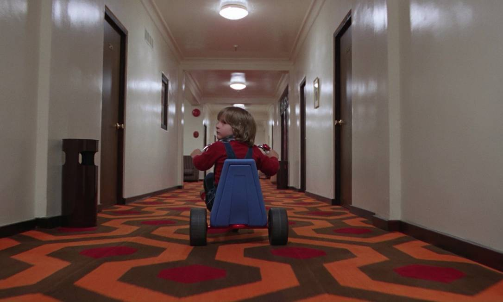
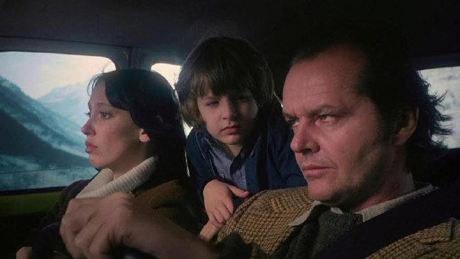
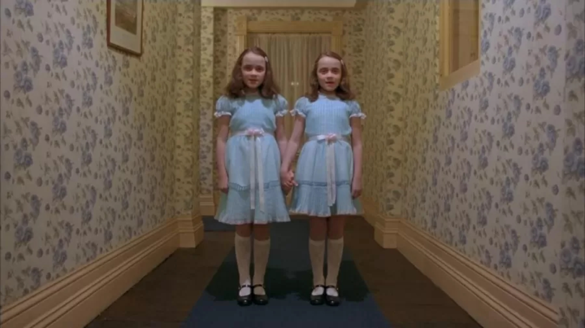
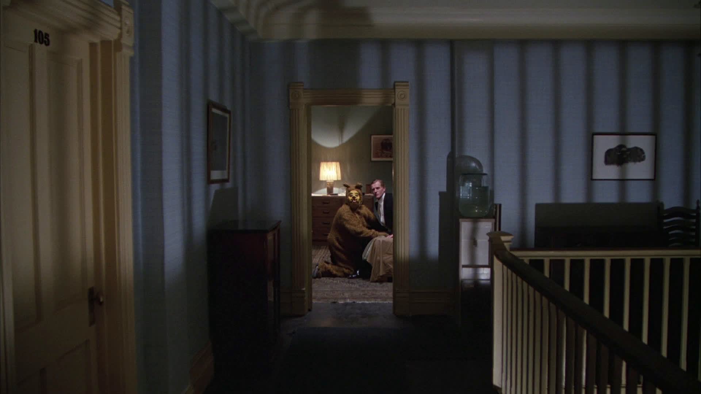

Bem, cá estamos diante de uma obra extremamente marcada na cultura pop e
que, como se não bastasse esse peso, ainda é baseada em um dos escritores mais renomados do terror.
E, ironicamente, o próprio Stephen King odeia esse filme e, em uma pequena parte, acho que eu
também odiei.
Eu tinha colocado na cabeça que queria ler o livro antes, mas surgiu uma daquelas oportunidades de
cinema ao ar livre gratuito, então pensei: “bem, por que não?”. E fui.

Claro que eu já conhecia algumas cenas clássicas, como o machado
atravessando a porta e as gêmeas no corredor, mas fora isso eu sabia muito pouco, apenas uma
noção básica sobre o universo do King e sobre a ideia dos “iluminados”.
Depois de assistir ao filme, e tendo pelo menos esse pequeno contexto, sinto que o título talvez funcionasse melhor
como uma referência ao próprio hotel do que ao “iluminado” em si, que mal possui grandes momentos ou demonstrações
mais marcantes dentro da trama.



A psicopatia crescente do Jack, especialmente da metade para o final, consegue manter a tensão e a urgência da
fuga de alguns personagens. Porém, para mim, o verdadeiro protagonista do filme é o hotel. Todo aquele ambiente
carregado, que já abrigou eventos perturbadores, parece muito mais interessante do que boa parte do que
acontece ao redor dele.
Muitas cenas, ao meu ver, são estendidas ao máximo possível, mesmo quando são apenas takes parados ou sequências
de zoom sem grandes acontecimentos. Por consequência, boa parte do filme acaba se tornando monótona, o que me
deixou um pouco desconectado da experiência.
“O Iluminado não assusta apenas pelos resquicios do passado, assusta pela lenta deterioração da mente humana presa dentro de um lugar que parece vivo.”
Ainda assim, a urgência da fuga, a presença enlouquecida do Jack e as manifestações do hotel, que aparecem com mais força no terceiro ato, conseguem garantir um final que prende o espectador e desperta curiosidade pela trama. Talvez, se o filme trabalhasse mais esses elementos ao longo da narrativa, o leve tédio que senti durante essas longas duas horas fosse menor.
✔ O QUE É BOM
- A atmosfera do Hotel Overlook é extremamente marcante.
- A atuação de Jack Nicholson sustenta boa parte da tensão do filme.
✖ O QUE NÃO É BOM
- O ritmo pode se tornar excessivamente lento em vários momentos.
- Algumas cenas são prolongadas além do necessário, causando monotonia.
Discussão e Opiniões